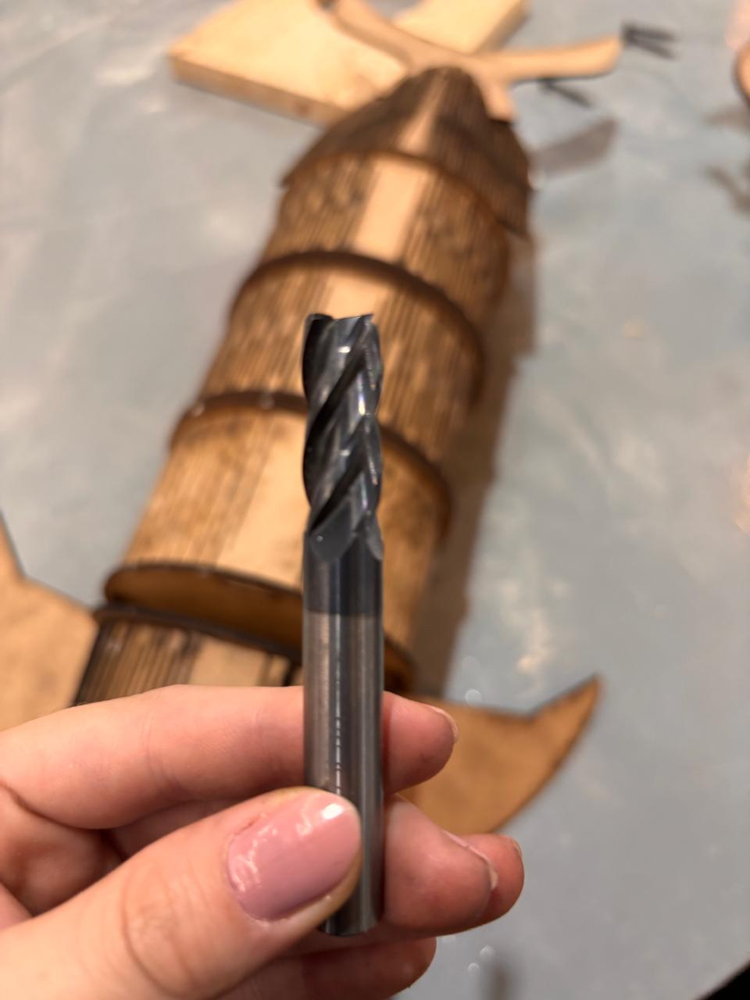
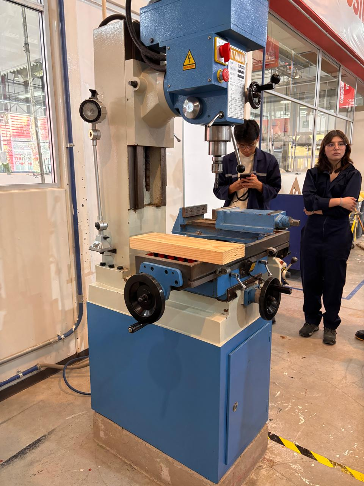
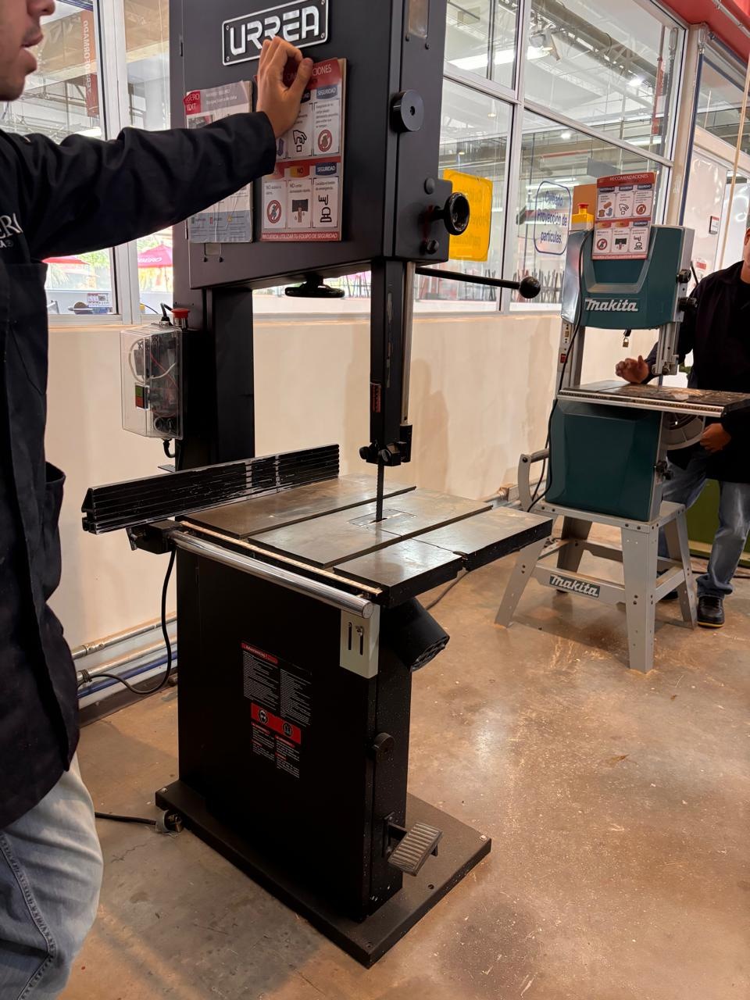
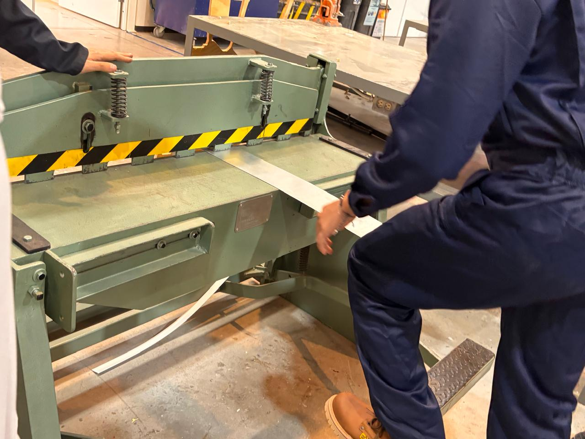
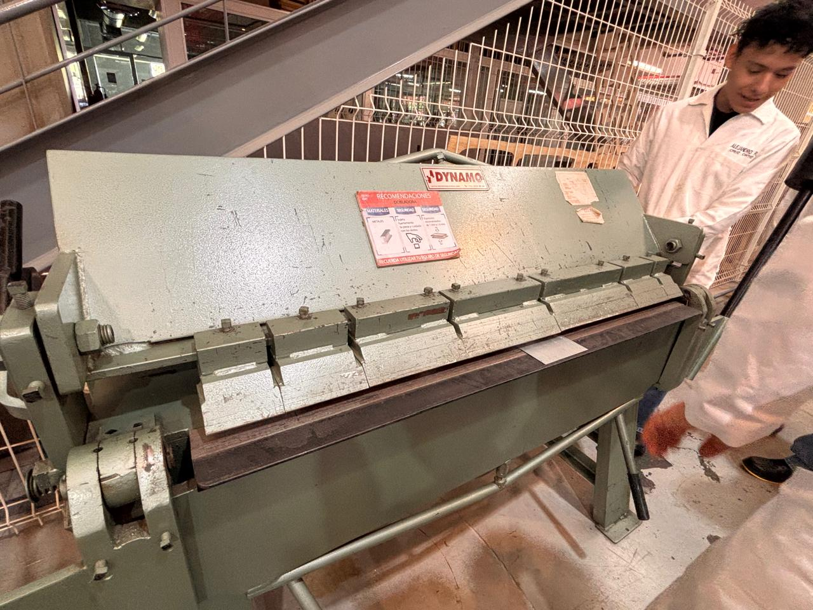
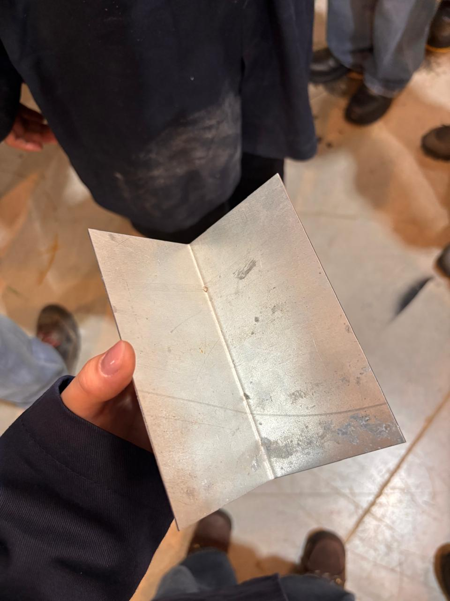

Reporte de Práctica: Maquinaria, Herramientas e Instrumentos de Medición
Institución: Universidad Iberoamericana Puebla
Materiaa: Proyectos de Ingeniería
1. Reglas de Seguridad
El trabajo dentro de los talleres del IDIT exigen el cumplimiento estricto de las normas de seguridad e higiene para prevenir accidentes operativos y garantizar un entorno de trabajo controlado.
Equipo de Protección Personal:
- Bata de laboratorio u overol: De uso obligatorio y debidamente abotonados para evitar atrapamientos en partes móviles de las máquinas.
- Botas con casquillo: Indispensables para la protección de las extremidades inferiores ante la caída accidental de piezas pesadas, láminas metálicas o herramientas.
- Lentes de seguridad: De uso obligatorio al operar o estar cerca de maquinaria de corte y maquinado (como la fresadora o la sierra cinta) para proteger los ojos de la proyección de virutas, astillas o partículas incandescentes.
2. Instrumentos de Medición
Durante la sesión impartida por el profe Oliver, se revisaron detalladamente herramientas de medición de alta precisión utilizadas en ingeniería, comparando instrumentos analógicos y digitales.
2.1. Vernier
El vernier es una herramienta versátil que permite tomar tres lecturas fundamentales: 1. Medición exterior: Se efectúa mediante la parte inferior para determinar diámetros o grosores externos. 2. Medición interior: Se realiza con las orejetas superiores para medir diámetros internos, aberturas o ranuras. 3. Medición de profundidad: Se ejecuta mediante la varilla extensible del extremo posterior.
Uso del Vernier:
Para usar el vernier primero buscas qué número marca la regla principal y luego observas qué rayita de la parte deslizante se alinea perfectamente con una rayita de la regla fija. Por otro lado, con el vernier digital es mucho más sencillo: solo lees directamente el número que aparece en la pantalla y puedes cambiar entre milímetros y pulgadas presionando un botón.
2.2. Micrómetro
Ofrece una precisión superior a la del vernier, siendo ideal para medir espesores delgados y diámetros reducidos con alta fidelidad.
- Micrómetro Mecánico: La medición se determina sumando la escala graduada del tambor fijo con la división del tambor móvil.
- Micrómetro Digital: El modelo digital permite lecturas absolutas e incorpora la función
INC. Al presionar el botónINC, la pantalla se establece en cero (\(0.000\text{ mm}\)) en cualquier posición, facilitando mediciones relativas, verificación de tolerancias y diferencias respecto a una pieza patrón.
2.3. Registro Experimental de Mediciones en Cubos de Prueba
Durante la práctica se tomaron lecturas dimensionales de 5 cubos de prueba (identificados como Cubos 3, 8, 10, 11 y 12(lo hice en equipo con Alejandro Cruz Ortiz)), evaluando el ancho (\(X\)), largo (\(Y\)) y alto (\(Z\)) mediante el uso consecutivo del micrómetro y del vernier.
Cubos de Prueba
| Identificador de Cubo | Ancho (\(X\)) - Micrómetro | Largo (\(Y\)) - Micrómetro | Alto (\(Z\)) - Micrómetro | Ancho (\(X\)) - Vernier | Largo (\(Y\)) - Vernier | Alto (\(Z\)) - Vernier |
|---|---|---|---|---|---|---|
| Cubo 3 | \(26.62\text{ mm}\) | \(34.52\text{ mm}\) | \(22.53\text{ mm}\) | \(28.38\text{ mm}\) | \(36.98\text{ mm}\) | \(24.12\text{ mm}\) |
| Cubo 8 | \(29.79\text{ mm}\) | \(43.45\text{ mm}\) | \(29.87\text{ mm}\) | \(31.51\text{ mm}\) | \(45.14\text{ mm}\) | \(32.55\text{ mm}\) |
| Cubo 10 | \(38.87\text{ mm}\) | \(38.83\text{ mm}\) | Excede capacidad | \(40.80\text{ mm}\) | \(40.48\text{ mm}\) | \(19.33\text{ mm}\) |
| Cubo 11 | \(31.27\text{ mm}\) | \(27.16\text{ mm}\) | \(28.46\text{ mm}\) | \(33.00\text{ mm}\) | \(28.80\text{ mm}\) | \(30.24\text{ mm}\) |
| Cubo 12 | \(29.20\text{ mm}\) | \(33.80\text{ mm}\) | \(26.90\text{ mm}\) | \(30.90\text{ mm}\) | \(35.54\text{ mm}\) | \(28.89\text{ mm}\) |
Nota: Las dimensiones están expresadas en milímetros (\(\text{mm}\)) bajo el formato Ancho (\(X\)), Largo (\(Y\)) y Alto (\(Z\)). Las diferencias observadas entre las lecturas tomadas con el micrómetro y el vernier probablemente se deban a algún error de calibración previa en los instrumentos, o bien a variaciones en la fuerza ejercida al apretar o dejar floja la pieza con cada herramienta durante la toma de datos.
Observaciones:
- Límite de Rango: Para la dimensión \(Y\) del Cubo 10, la apertura del arco del micrómetro utilizado resultó insuficiente para abrazar la pieza, evidenciando una limitación en el rango de alcance del micrómetro frente a la versatilidad de apertura del vernier.
3. Maquinaria de Corte y Maquinado
3.1. Fresadora e Instrumentos de Corte
Diferencia entre Fresa y Broca:
- Broca: Diseñada únicamente para hacer hoyos (solo dirección vertical (perpendicular a la superficie)), realizando barrenos o perforaciones cilíndricas.
- Fresa: Diseñada con filos que le permiten cortar en dirección vertical y transversal (\(X, Y\)). Sirve para el desbaste, planeado, ranurado y perfilado de piezas.

Reglas de Operación para Fresado:
- Regla de Contacto: Al realizar un corte lateral o de desbaste, el material no debe abarcar más de la mitad del diámetro de la fresa (\(\le D/2\)). Exceder este límite sobrecarga los filos y puede lastimar o romper la herramienta.
- Ajuste de Velocidades según el Material: La velocidad de giro (\(RPM\)) debe ajustarse según el tipo de material a trabajar (madera vs. metales blandos o duros).
- Control de Fricción y Temperatura: Una velocidad inadecuada o un avance forzado generan fricción excesiva. Esto provoca un sobrecalentamiento drástico que llega a quemar tanto la herramienta de corte como la pieza de trabajo.
- Movimiento de la Mesa mediante Manivelas: El posicionamiento preciso de la pieza se controla manualmente accionando las manivelas de los carros longitudinal (\(X\)), transversal (\(Y\)) y vertical (\(Z\)).

3.2. Sierra Cinta
Esta máquina utiliza una hoja de sierra sin fin para efectuar cortes continuos rectos y curvos en madera.

4. Deformación y Corte de Lámina Metálica
4.1. Guillotina para Lámina
Diseñada para realizar cortes rectos y limpios en láminas metálicas.
Técnica Correcta y Seguridad en el Pedal:
La máquina funciona mediante una palanca de pedal. Para accionarla de forma segura, se debe aplicar fuerza apoyando un solo pie, manteniendo la otra pierna bien cimentada en el suelo. Jamás se debe subir con ambos pies al pedal, ya que se pierde el equilibrio, generando un grave riesgo de caída.

4.2. Dobladora de Lámina
Utilizada para efectuar pliegues, pestañas y dobleces angulares en láminas metálicas. Funciona aplicando una fuerza uniforme hasta lograr plegar la lámina al ángulo deseado.


5. Soldadora por Puntos
Une dos láminas de metal superpuestas sin requerir material de aporte. Aplica presión mecánica concentrada a través de dos electrodos de cobre e introduce un pulso de corriente eléctrica de gran intensidad en una fracción de segundo, logrando la fusión local del metal (punto de soldadura).
6. Conclusión
La práctica reforzó de manera práctica los conceptos fundamentales del procesamiento de materiales y mediciones. La correcta interpretación de las lecturas en instrumentos de medición analógicos y digitales, el conocimiento de los límites operativos de las herramientas de corte, así como la estricta adherencia a las normas de seguridad (EPP y posturas seguras en guillotinas), garantizan una formación técnica sólida para el desarrollo seguro y eficiente de proyectos de ingeniería.